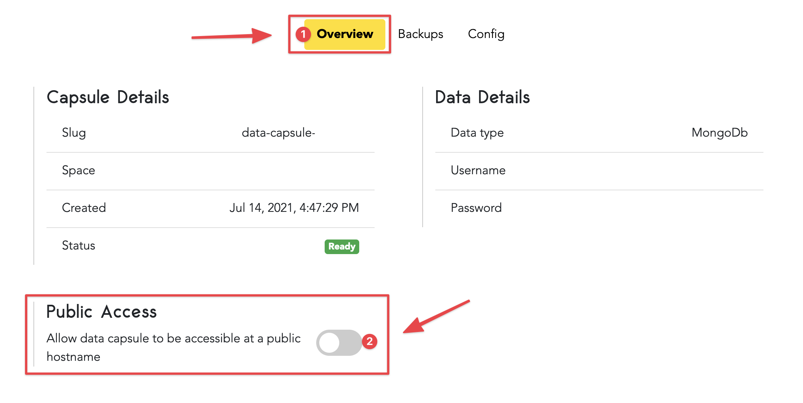

How To Set Up A MongoDB Data Capsule
Create MongoDB Data Capsule
Log in to your Code Capsules account and navigate to your desired Space. Once inside the Space click "New Capsule" and select the "Data Capsule" option from the Create New Capsule screen that slides in from the right.

On the next screen, choose "MongoDB Database Cluster" as your data capsule type and confirm your selection by clicking on the "Create Capsule" button to the bottom right.
After clicking on "Create Capsule", Code Capsules will build and start your new data capsule. To allow your data capsule to be publicly accessible turn on the radio button under "Public Access" to the bottom left on the "Overview" tab.

Select this option if you plan on connecting your data capsule to an application that's not hosted on Code Capsules.
Binding Data Capsule To A Backend Capsule
Data capsules need to be connected to a backend capsule or application before you can use them. If you're hosting your backend application on Code Capsules navigate to the capsule of the backend application and click "Config" to open the capsule's config tab. Scroll to the bottom of this tab to see an option of binding your recently created data capsule to this application.

Click "Bind" to bind your data and backend capsule. When binding the two, Code Capsules creates a DATABASE_URL environment variable to let your backend capsule know how to access services and features of your data capsule. After the two have been binded together scroll to the top of the Config tab to see the value of this variable.
To be able to read and write to our data capsule we need a database variable we can access in code. Copy the value of the DATABASE_URL variable mentioned above and append /your_db_name?authSource=admin to it as a query parameter. The query parameter we appended tells the data capsule to create a database named your_db_name if it doesn't exist already. If it does exist it will simply connect and perform the read and writes on this database. This allows you to have multiple databases in one data capsule.
Connecting To MongoDB Data Capsule From A Python Application
Use the code below if your backend capsule is a python application.
import os
import pymongo
data_capsule_url = os.getenv('DATABASE_URL')
database_one_url = data_capsule_url + "/database_one?authSource=admin"
production_database_url = data_capsule_url + "/production_database?authSource=admin"
client = pymongo.MongoClient(database_one_url)
db = client.test
### Do something with the db variable here
Connecting To MongoDB Data Capsule From A NodeJS Application
Use the code below if your backend capsule is a NodeJS application.
data_capsule_url = process.env.DATABASE_URL
database_one_url = data_capsule_url + "/database_one?authSource=admin"
production_database_url = data_capsule_url + "/production_database?authSource=admin"
var MongoClient = require('mongodb').MongoClient;
MongoClient.connect(database_one_url, function(err, db) {
// Do something with the db variable here
});
Connecting To MongoDB Data Capsule From Outside Code Capsules
If you're not hosting your backend application on Code Capsules you can still connect your data capsule to it. The first step is to allow public access to your data capsule. Make sure this option is turned on by navigating to the bottom section on your data capsule's Overview tab.
If public access is allowed to your data capsule there will be a connection string below the radio button as shown in the above picture. Copy this connection string and paste it in your backend application's code in order to access your data capsule's services.
Connecting To MongoDB Data Capsule From Externally Hosted Python Application
Use the code below if your backend application is written in python.
import pymongo
database_url = "<connection_string_here>" + "/database_one?authSource=admin"
client = pymongo.MongoClient(database_url)
db = client.test
### Do something with the db variable here
You'll notice in the code that we appended /database_one?authSource=admin to the connection string. This tells the data capsule to create a database with the name database_one if it doesn't exist or to connect to it if it does exist.